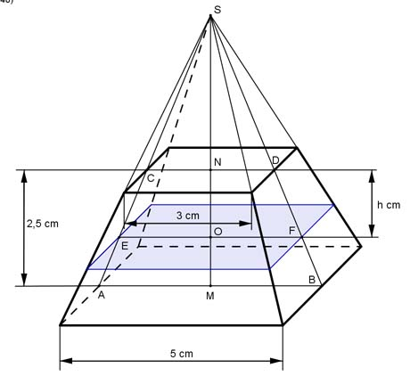
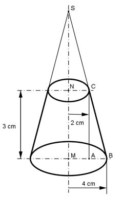

Aufgabe 257 Wie groß sind das Volumen V und die Mantelfläche M des dargestellten Kegelstumpfes? Wie groß ist der Mittelpunktswinkel α seiner Abwicklung?  Kegelstumpf:  V = л * (16 + 4 * 2 + 4) cm³ V = 87,9 cm³ Kegelmantel: AB = MB - NC = 4 cm - 2 cm = 2 cm Satz von Pythagoras im Dreieck ABC: BC² = AB² + NC² = 2² cm² + 3² cm² = 13 cm² |√ BC = 3,6 cm M = л * BC * (r1 + r2) = л * 3,6 * (4 + 2) cm² = 67,8 cm² Strahlensatz: MB NS + NM ---- = ---------- NC NS Über Kreuz multipliziert: MB * NS = NC * (NS + NM) cm MB * NS = NC * NS + NC * NM cm |-NC*NS MB * NS - NC * NS = NC * NM NS * (MB - NC) = NC * NM | : (MB - NC) NC * NM 2 cm * 3 cm NS = --------- = -------------- = 3 cm MB - NC 4 cm - 2 cm MS = NM + NS = 3 cm + 3 cm = 6 cm Satz von Pythagoras im Dreieck MBS: BS² = MB² + MS² = 4² cm² + 6² cm² = 52 cm² |√ BS = 7,2 cm äußerer Kreisbogen b der Abwicklung = Umfang1: U1 = 2 * л * r1 = 2 * л * 4 cm = 25,12 cm 2 * л * BS * α b = ---------------- | * 360 360 b * 360 = 2 * л * BS * α |:(2*л*BS) b * 360 25,12 * 360 α = ------------ = ---------------° = 200° 2 * л * BS 2 * л * 7,2 oder innerer Kreisbogen b der Abwicklung = Umfang2 : U2 = 2 * л * r2 = 2 * л * 2 cm = 12,56 cm 2 * л * BC * α b = ---------------- |*360 360 b * 360 = 2 * л * BC * α | : (2 * л * BC) b * 360 12,56 * 360 α = ------------ = --------------° = 200° 2 * л * BC 2 * л * 3,6